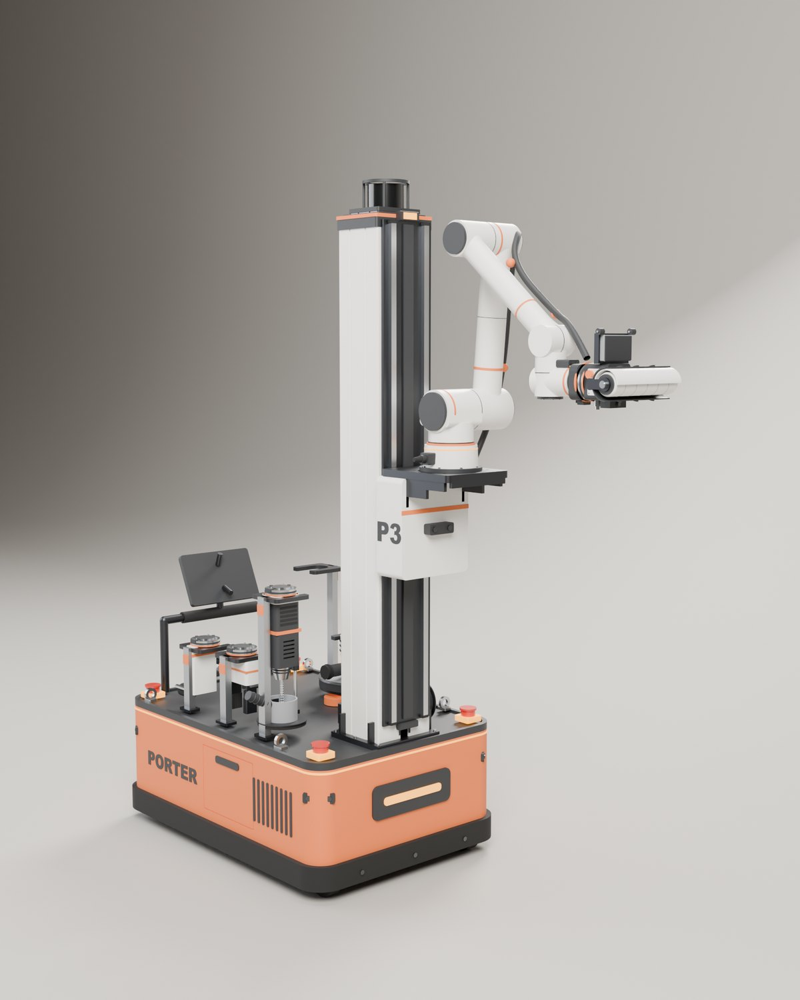
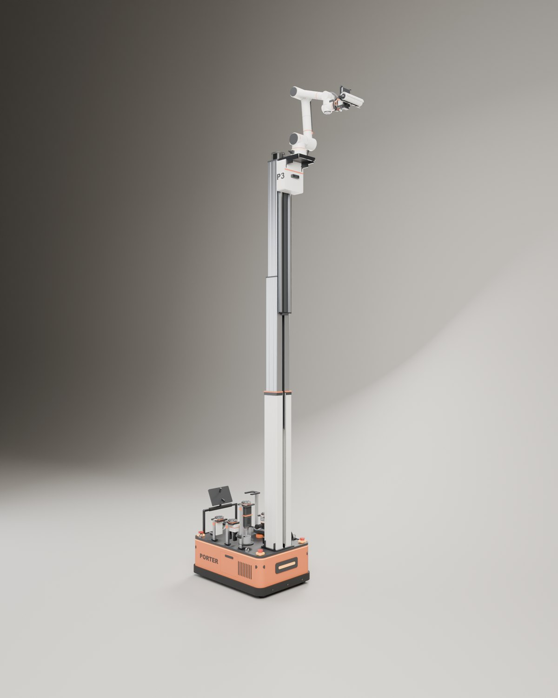

Porter Robotics is my company. Our robot, P3, does the light, repetitive work inside a building: it paints, sands, drills, marks, installs small parts and checks the result. A swerve drive base carries the paint, the batteries and six tools; a three stage mast lifts a six axis arm, and the arm swaps tools on its own.
I designed P3 in Fusion as buildable parts and animated it from the CAD model, checking every move for collisions. It weighs about 174 kg, fits through a 36 in door and under an 80 in door, and reaches 16 ft walls and 17 ft ceilings. P3 has not been built yet; the numbers come from the model.

